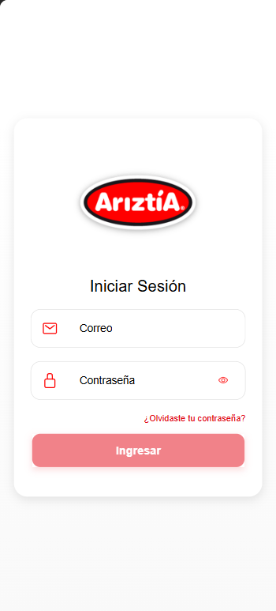
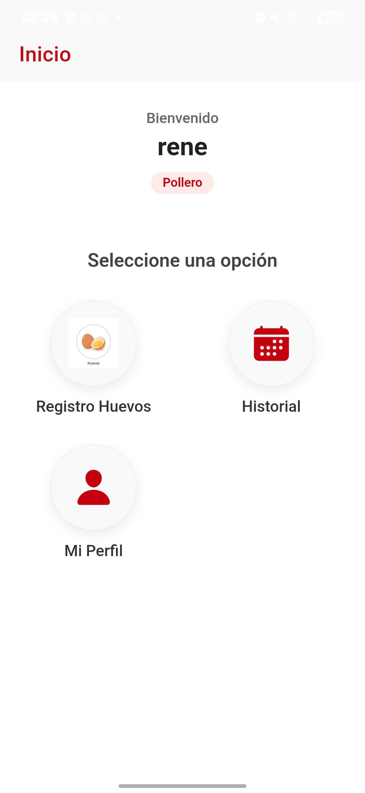
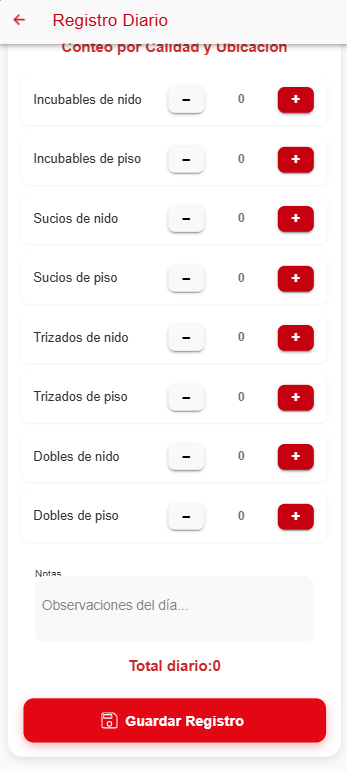

AvicolApp facilita la trazabilidad y el control de calidad en tiempo real para la recolección de huevos.
Registro de Calidad
- 🥚 Incubables: Nido y Piso
- 🧼 Sucios: Nido y Piso
- 🔨 Trizados: Nido y Piso
- 🍳 Dobles: Nido y Piso
Datos en la Nube
- 📅 Historial: Reportes por fecha.
- 🔥 Firebase: Sincronización real.
- 🚀 Eficiencia: Menos papel, más datos.
Vistazo a la Aplicación
Interfaz intuitiva diseñada para el trabajo en terreno.



Guía de Instalación Rápida
Descargar
Presiona el botón "Descargar APK" al final de esta página o escanea el código QR.
Permisos
Si Android te pregunta, permite la instalación de "Fuentes desconocidas" o "Navegador".
Ingresar
Abre la app e inicia sesión con las credenciales de tu granja asignada.
Preguntas Frecuentes
¿Qué hago si olvidé mi clave?
Debes solicitar el restablecimiento de contraseña a tu supervisor de granja o restablecerla desde la misma aplicación!.
¿Es compatible con mi celular?
AvicolApp es compatible con dispositivos Android 8.0 o superior. No está disponible para iPhone por el momento.